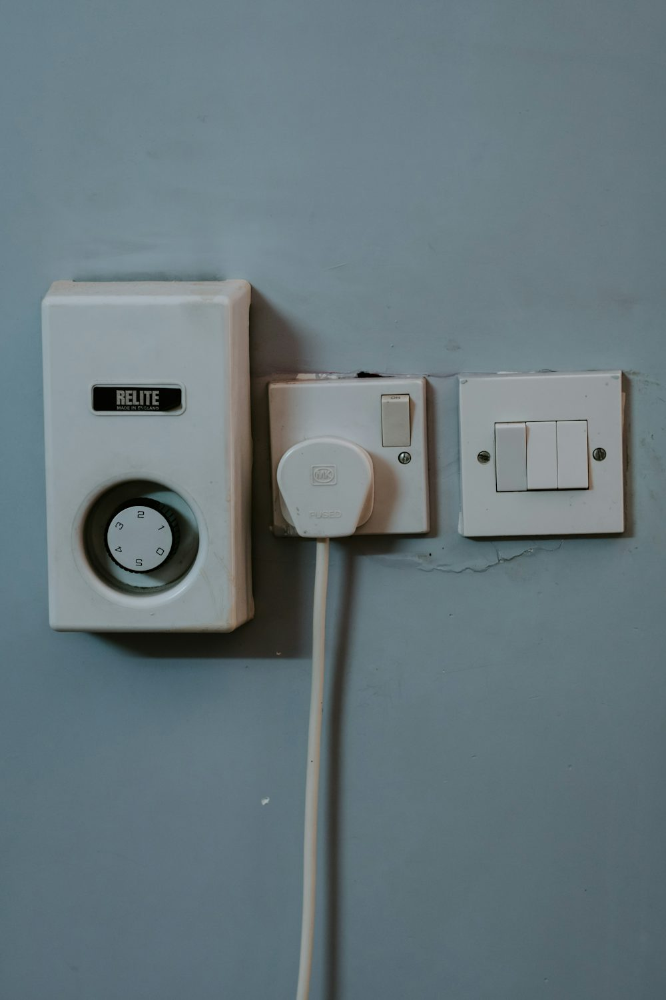
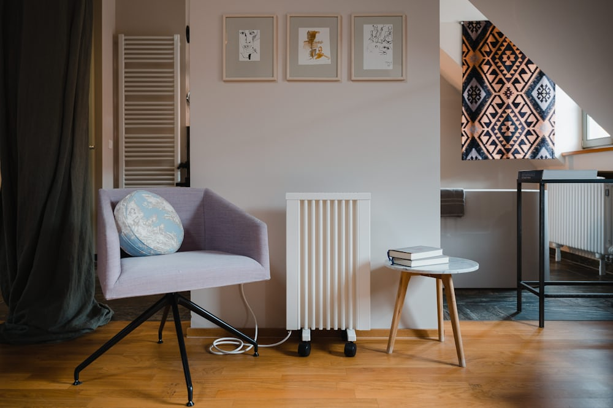
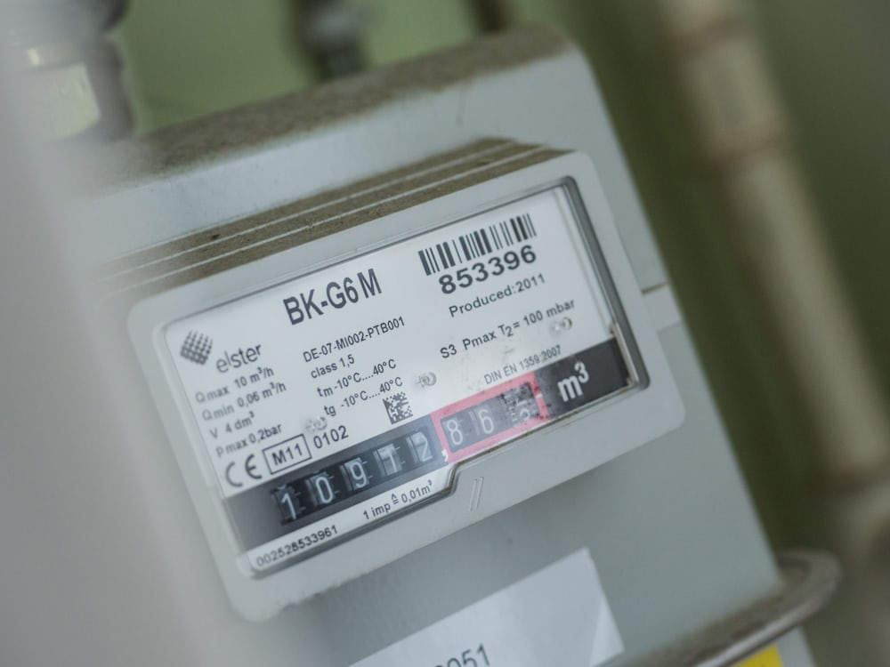

Electricity Myths That Are Costing You Money ⚡
Think you’ve got your electricity bills under control? If you’ve fallen for any of these common UK electricity myths, you might be letting money slip through the sockets...
Read the full article ↓1. “Standby Mode Doesn’t Use Much Power”
Devices left on standby still draw power—TVs, routers, chargers—they can eat into your bill. UK households waste around £55 annually this way. Turn things off at the socket!
2. “Electric Heaters Are Cheaper Than Central Heating”
Electricity costs about three times more than gas per unit. Use plug-in heaters only for small, short-term heating—not to replace central heating.
3. “Smart Meters Automatically Save Money”
Smart meters show usage but don’t save energy themselves—you have to act on the data. That's where we come in: we help find and fix issues behind the scenes.
4. “Turning Lights On and Off Wastes More Energy”
With LEDs, switching them off actually saves energy. So flick them off when you leave the room—simple and effective.
5. “All LED Bulbs Are the Same”

Cheap LEDs may flicker or degrade quicker and consume more power than advertised. Stick to reputable, certified brands for quality and savings.
6. “Old Fuse Boxes Are Still Fine”

Older fuse boxes may lack modern safety features like RCDs. Upgrading your panel ensures you’re protected from newer faults.
7. “Leaving the Heating on Low All Day is Better”
Not unless you're funding energy companies—you’ll save more using timers and thermostats to heat only when needed.
Need help spotting energy leaks? Call 07837 184 672 — your friendly Bradford sparkies will sort it.
Still Rocking a 90s Fuse Box? Let’s Talk Safety & Style 🧯⚡
If your fuse box hums like your gran’s old telly and looks more retro than chic, you’re due an upgrade. Dive in for some safety facts and a bit of banter.
Read the full article ↓Why Modern Fuse Boxes Matter
Old-school fuse boxes with rewirable fuses need you to physically replace wires when there's a fuse blow. That’s not safety; it’s a Health & Safety return to the Stone Age. Modern boards use MCBs and protective devices—no wire-fiddling needed.
Landlord Alert 🚨
Under the PRS Electrical Safety Standards, outdated boards won’t pass an EICR. No passing inspection = no rent. And landlords? You might be fined or blocked from re-letting. It’s your responsibility to ensure tenants aren’t living next to a makeshift hazard.
Dual RCD vs RCBO: What’s the Upgrade?
- Dual RCD boards split your home into zones—less disruption when one trips.
- RCBOs offer circuit-level protection: one device to protect each circuit. Perfect for pinpointing issues without shutting down half the home.
The Legal Bit (but actually useful)
Your board must comply with BS 7671 and have residual current protection (RCD or RCBO). These protect against earth faults and improve safety. Your EICR will flag anything missing or unsafe—and you’ll need it sorted within 28 days.
Price & Process
Check our Fuse Box Replacement service — starting from £250. That includes a tidy fit, certification, and all the necessary paperwork.
Signs You’re Due an Upgrade
- Buzzing panel or warm to the touch
- Flickering lights when you fire up the kettle
- Only old-school fuse links (not MCBs)
- You find yourself fishing out little wire bits
No jokes—these are warning signs. If you’ve got one or more, you’re playing with fire (literally). Give us a call on 07837 184 672 to sort it before it sorts itself.